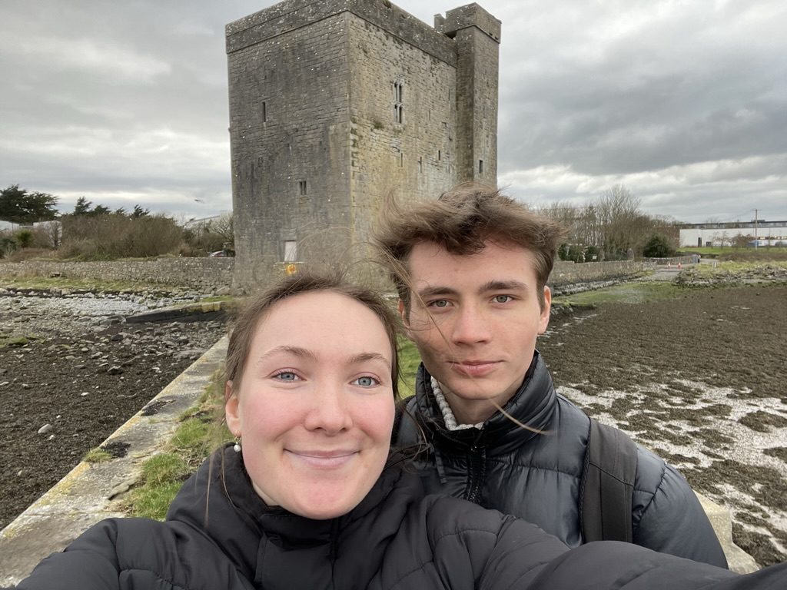

Hi, how are you:))
Wawawoowa ~ Borat Very nice ~ Borat Happy times ~ Borat High five ~ Borat I’m not in love I’m in pain ~ Barnabitch “We used to be friends. What happened?” ~ Barnaba while having a massive stroke “So… I’m a doctor” *yeet* ~ Barnaba “Selfish and vain” ~ Kim I just want to hear im weaker, not weak ~ probably Barney I HAVE AUTISM ~ Barney There was a turtleneck squad ~ Barney I’m so stupid - Kim Ice on my wrist eyyy ~ Barney 6th dimensional porn ~ Barney
